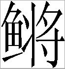
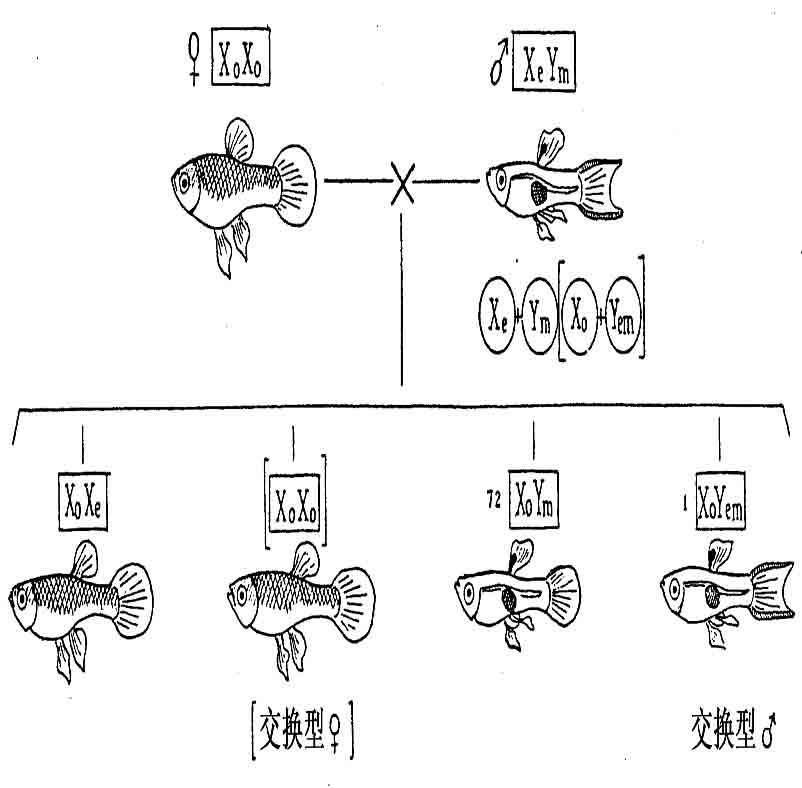
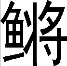
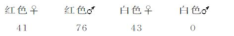
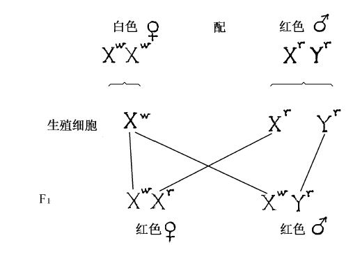
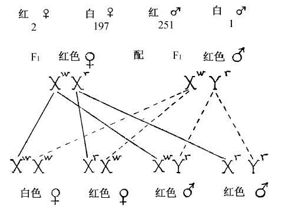
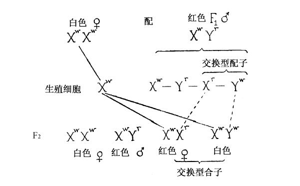
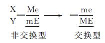

Y染色体
支持Y染色体上有孟德尔式因子的证据分为两类。在两科鱼类里，Schmidt、会田龙雄和Winge证明了Y染色体上有一些基因。在毒蛾科里，Goldschmidt分析了种间杂交的结果，并作出了同样的解释（这里是W染色体）。毒蛾实验结果将于性中型一章中予以考虑，现在只讨论鱼类实验结果。
有一种小型缸养鱼虹

Lebistes reticulatus原产于西印度和南美北部。雄鱼色彩鲜艳，与雌鱼显然不同（图128）。异族雌鱼很类似，异族雄鱼则各有不同的特种色彩。Schmidt曾经发现，某一族雄鱼同另一族雌鱼交配，则子代雄鱼同父型相似。子代（F 1 ）杂种自交，孙代雄鱼也同父型相似，没有一只表现出母系方面祖母的特性的。所有F 3 和F 4 的雄鱼也都和父系方面的祖父相似。这里，对于任何可能由母系祖母方面传递来的性状来说，似乎是没有一点孟德尔式分离现象的。
图128 示虹

中一种性连锁性状的遗传，这种性状的基因位于X和Y染色体上面（仿Winge）正反交（注：正反交：即在杂交中父母两方的性状与原来父母两方的性状刚好相反。——译者注。）的结果也是一样；子孙两代的雄鱼都和父系雄鱼相似等等。
在日本的小溪和稻田内找到另一种鱼Aplocheilus latipes有几个类型各有不同的色彩。在人工饲养下，也出现了另一些类型。在这些鱼里，每一个类型的雌鱼和雄鱼都有。会田龙雄证明：有几种差异是通过性染色体（X和Y）传递的。这些性状的遗传情况，可用下一假设来解释，即假设有关基因有时位于Y染色体上，有时又位于X染色体上，而且两染色体之间又可以发生交换。
例如鱼体的白色是性连锁遗传。其等位性为红色。纯白的雌鱼同纯红的雄鱼配合，子代的雌鱼和雄鱼完全是红色。子代自交，产生

假设白色基因位于雌鱼的两条X染色体上，用X W 代表（图129），又假设红色基因位于雄鱼的X和Y上面，用X r 和Y r 代表，则上述杂交按照XX—XY公式推演，应该得出图129的结果。如果红色（r）是显性，白色（w）是隐性，则子代雌性和雄性杂种全是红色。子代雌雄自交，结果如图130。孙代雌鱼一半红色，一半白色，所有雄鱼完全是红色，雄鱼条数，等于两种雌鱼条数的总和。
因此，除非子代（F 1 ）X w Y r 红色雄鱼的X和Y之间发生交换，从而产生一条Y w 染色体（图131），否则根据上述公式，纯红雄鱼同纯白雌鱼交配，是没有产生孙代白色雄鱼的希望的。只有当这种染色体［即Y w ］的精子同X w 的卵子结合时，才会产生X w Y w 的白色雄鱼。事实上，在子代杂合子X w Y r 的红色雄鱼（从上述实验得来）回交纯白雌鱼的一个实验中，已经出现过一条白色雄鱼。实验结果是这里两条红色雌鱼和一条白色雄鱼的出现，在子代雄鱼的X w 和Y r 的交换率为1/451的假设下，是可以得到解释的（图131）。白色（注：原文中的“白色”也许指白色雌鱼。——译者注。）同褐色雄鱼杂交，也得出同一结果，不过没有交换型。红斑雌鱼同白色雄鱼杂交，结果仍然是一样的，从回交所产生的172条孙代中，有11条为交换型。

图129 X染色体和Y染色体同有一个基因。图示该有关性状的遗传情况

图130 F 1 杂合子的雌鱼和雄鱼自交。图示其红白两色的遗传情况，Y染色体和X一样也有红色基因（r）

图131 子代雄鱼的X染色体和Y染色体分别含有红基因和白基因，两个基因被认为是等位基因。图示两基因之间的交换作用
Winge（1922—1923）把Schmidt对于虹 的实验更推进一步，并且独立地达到了会田龙雄所作出的关于Y染色体的同一结论。图128示某一族的X o X o 雌鱼同另一族的X e Y m 雄鱼杂交的结果。上述杂合子雄鱼的成熟生殖细胞分为X e 和Y m 两种非交换型以及X o 和Y em 两种交换型。相应地也就有了X o Y m 和X o Y em 两种雄鱼。后一种少见，占子代雄鱼1/73（注：另一实验交换型占雄鱼4/68。）。
Winge的报道中没有提到X e X m 型的雌鱼，所以不能根据他的材料来决定雌鱼中是否也发生了交换。其次，Winge用X o 代表一个类型的雌鱼，意思是说X o 染色体上缺少了某些基因。必须有两对基因，才能表示出两条X染色体之间的交换。事实上，Winge用X o 代表同Y m 发生了交换之后的X e ，但没有指明e和m的等位因子的变化。完全公式中应该有一条具备M基因和e基因的X染色体，以及一条具备m基因和E基因的Y染色体。交换以后，X上势必有E和M，而Y上势必有e和m，如图132所示。交换以后，X染色体不是X，而是X ME ，Y染色体是Y me 。如果me是显性而ME是隐性，那么，除了应该得出另一种交换型X M E（注：原文中X ME 可能是X me 的误写。因为除图132的交换方式外，还可能发生另一种方式的交换，例如X me 和Y ME 两个交换型。

但如作者所说的，这种交换并未发生，理由详见原文。——译者注。）以外，便会得到报道里的结果。如果X染色体上在M左侧的那一部分，有性别决定基因（即图中X的粗线部分），那么，这个实验之所以没有这种交换，便可以用M和X部分的接近这点来解释了。

图132 雄鱼中并联X染色体的常染色体部分同另一条常Y染色体发生交换。图示附着的X染色体同这个交换的可能关系
1927年Winge发表了：在虹 Y染色体上的九种基因与X染色体上的三种基因之间，一直没有发生交换。Winge认为这是因为这些基因同雄性决定基因互相接近，或者是因为这些基因和雄性决定基因是同一样的东西。X和Y上面的其他五种基因，表现出有交换，其中一个基因位于常染色体上。Winge把雄性决定基因看成是单一的、显性的，而把X染色体上等位基因的性质却当做一个悬而未决的问题，用O代表。